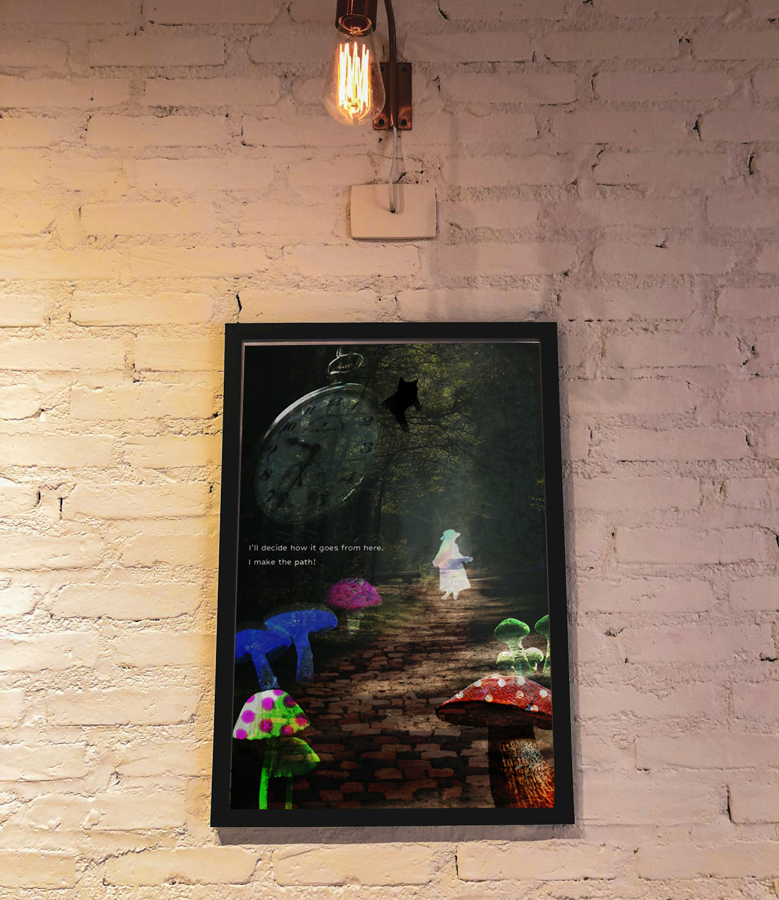
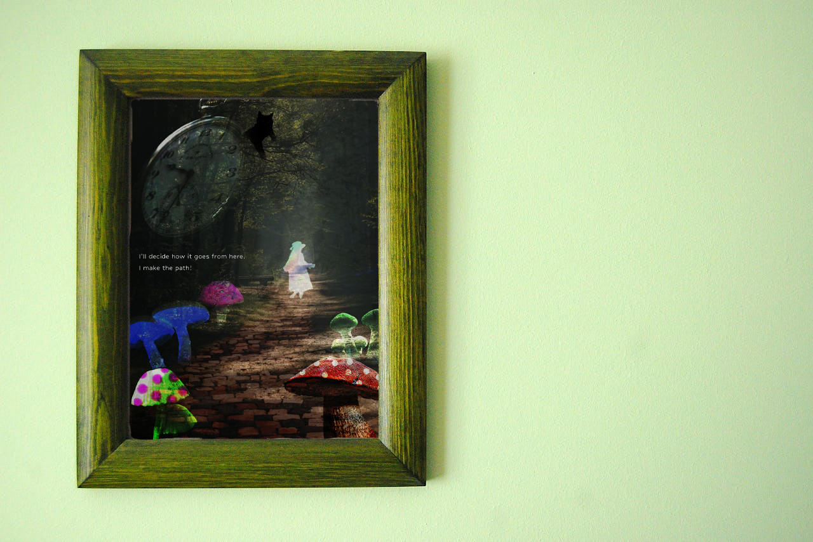

現実にはない
世界観の
レタッチ作品
世界観の
レタッチ作品

Photoshopでしかできない世界観を作る課題見本として制作しました。 「不思議の国のアリス」をモチーフとし、ストーリーに登場するアイテムを複数入れて馴染むように加工し、 ポスターに仕上げています。

| ターゲット | 専門学校１年生のグラフィック課題 |
|---|---|
| 目的 | 美術館の企画展のチラシ、チケット、関連グッズを制作する。 メインの写真はPhotoshopの生成AIやフリー画像等を活用し、自分が行きたい企画展を一から考える |
| デザインプロセス | 自分が作りたいことのテーマを決め、それに合わせた素材探しをする。 収集した素材を使って、加工及び合成をする。ただ合成するだけでなく、素材と素材が馴染む努力をする。 |
| 制作時間 | 2週間 |
| 制作ツール | Photoshop |
TOPへ戻る